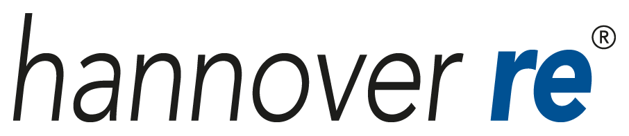

Highlights
Organized by National Assembly of Malaysian Students in America (NAMSA) and in collaboration with multiple top Malaysian Organizations in the USA and Malaysia, Seeds Job Fair had worked hand in hand to bring the sucess of ViCaF 2017
A Virtual Career Fair for Malaysian Students in North America
Organized by National Assembly of Malaysian Students in America (NAMSA) and in collaboration with multiple top Malaysian Organizations in the USA and Malaysia, Seeds Job Fair had worked hand in hand to bring the sucess of ViCaF 2017
"Unique platform to reach students with diverse academic backgrounds across different universities in the US. Interviews can be conducted seamlessly on-the-spot via teleconferencing, with strong student participation resulting in always having candidates for interviews. Resume drop function also convenient to gather more potential candidates on top of those interviewed. All in all, we are happy to receive >40 resumes with ~10 interviews conducted through this platform."
-Hannover Re
 "I highly recommend future students and new graduates to participate in this job fair in the future because it will be worth your time and effort. Don’t miss out on this opportunity!"
"I highly recommend future students and new graduates to participate in this job fair in the future because it will be worth your time and effort. Don’t miss out on this opportunity!"
-Anis Muslimin, 22, University of Iowa
"Good and easy platform to use through portal...great opportunities for graduating students to prep for interviews and jobs they want to be involved with"
-Syed Amir, 23, Drexel University
"A very noble project that helps building bridge between recruiters, opportunities and internships and students"
-Rabiatul Sulaiman, UC Davis